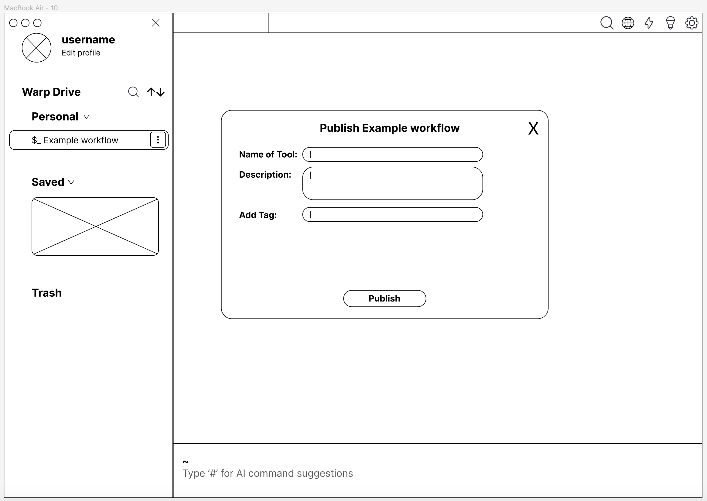
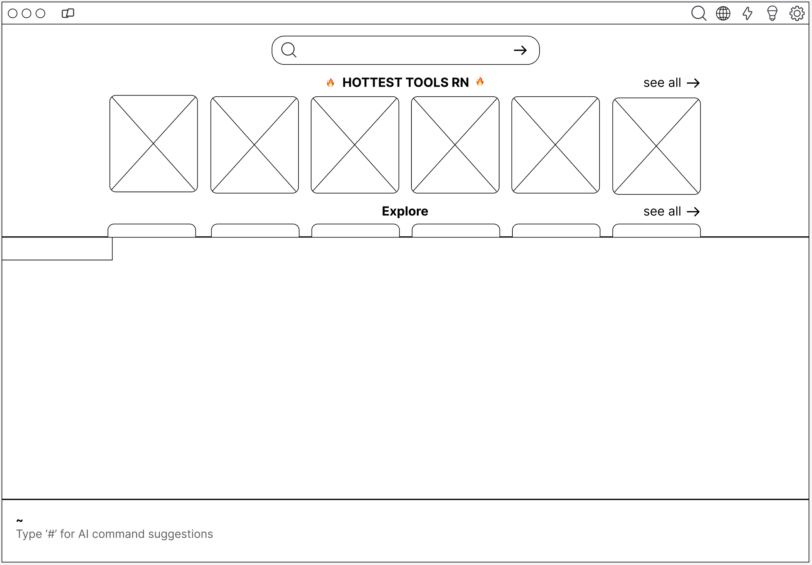
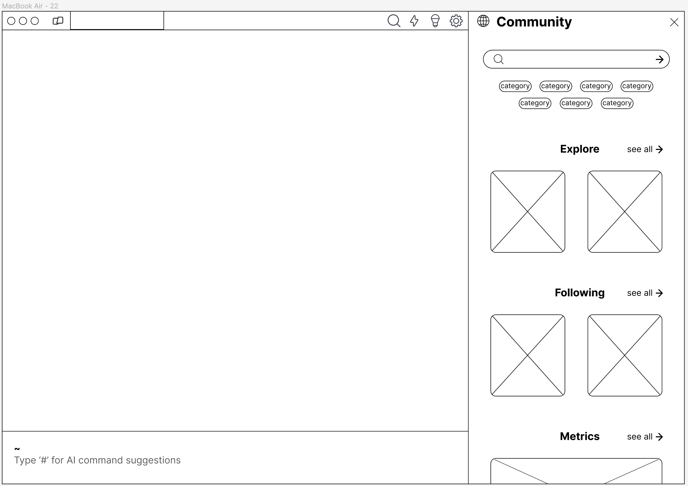
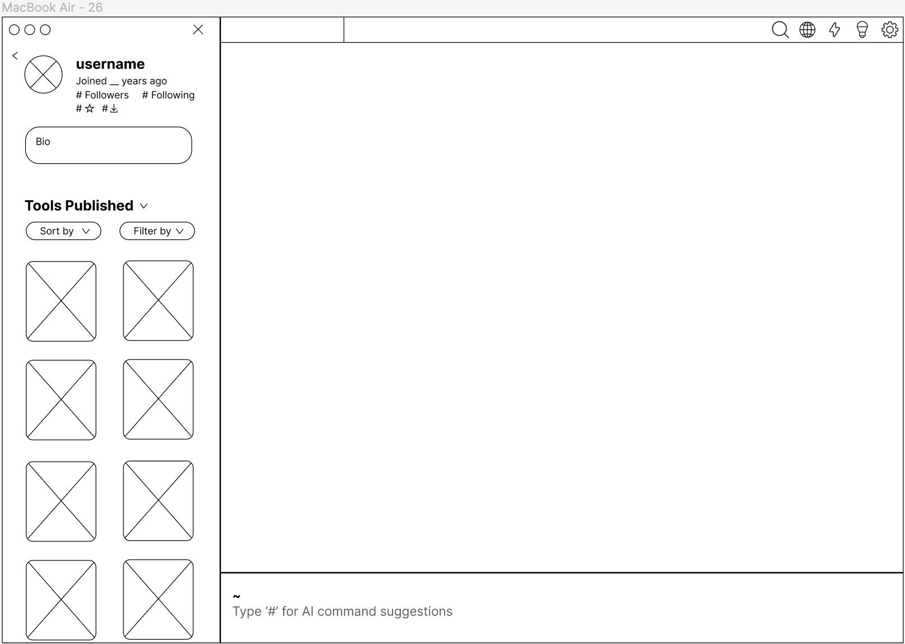
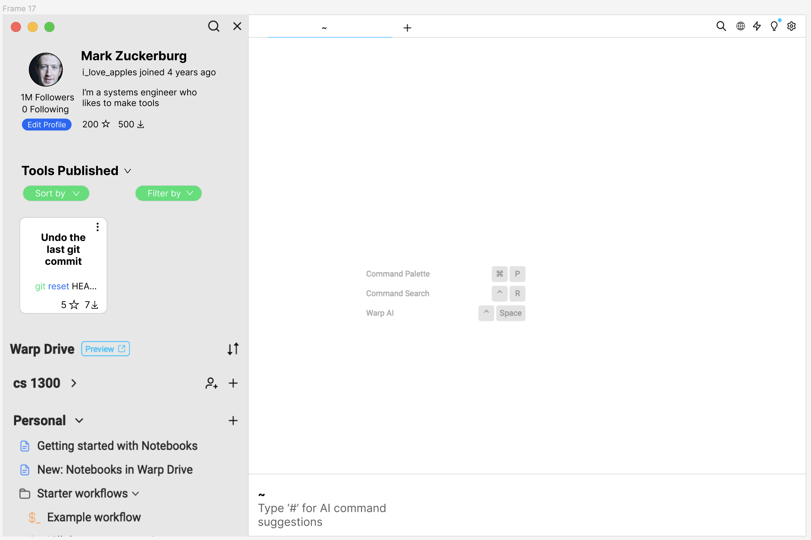
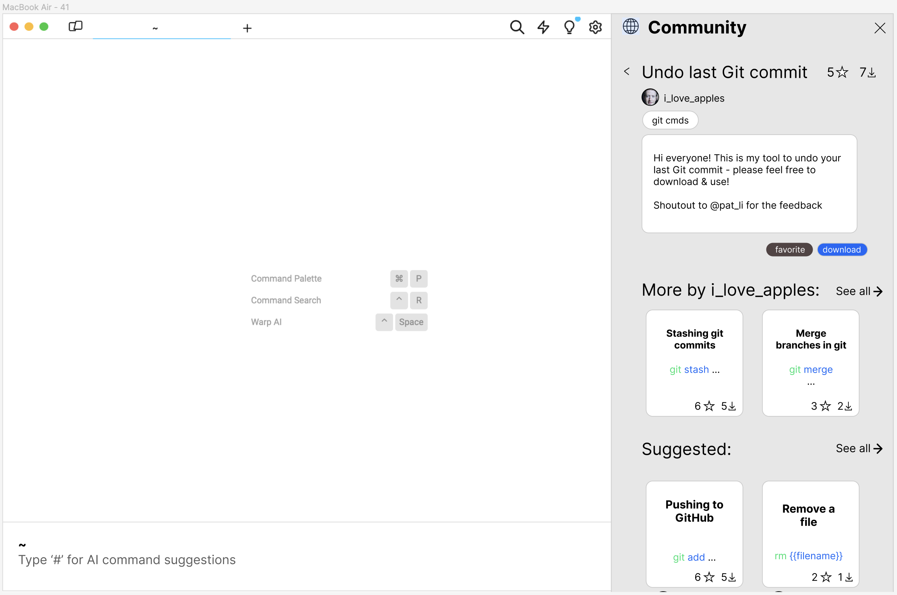

Iterative Design
Allowing Warp Users to Connect, Share Tools, and Build Community
UX Design and Prototyping


Context and Problem:
Warp is a terminal emulator that has been integrated with AI and collaborative tools for better productivity. Some of its most prominent features include the Warp Drive for sharing commands across teams, Warp AI for command suggestions, and an IDE. However, one of the main problems with Warp today is that there is no place in the product to connect with other users, share tools, or install extensions.
To solve this problem, I worked in a group of 4 to ideate possible fixes, sketch new features, and ultimately devise a full-fledged prototype solution to this problem. Our solution enables users to connect and share their work with others
in an environment that fosters creativity, all while integrated within the current application.
Research:
To begin, we identified the 2 main target groups whom we intended to address with our solution: creators, who tend to be experienced developers who enjoy making tools for others to use, and consumers, who are looking for tools to get a particular task done.
During the research process, we received an outline of the issues from the client along with a demonstration of how they can arise from the current platform. Individually, we each tried using the platform for ourselves to get a feel for how we could potentially integrate CLI tools and a community feature into the terminal. The main pain points that we consolidated were the following:
-
There is no way for users to connect with other Warp users. Using the platform may possibly feel isolating, as there is no interaction with other members. This is an issue for creators, who may want to collaborate with others to build their tools, and consumers, who want to share ideas about different tools.
-
In order to find specific packages or command-line tools, one must leave Warp to find them. There is no built-in page for users to search through for potential solutions, which is an issue for consumers who are looking to facilitate their work.
After gaining a more in-depth understanding of the problems, pain points, and target audiences, we ultimately decided that we wanted to incorporate 3 new features into the Warp terminal that would help solve these issues.
Community Page
Enhanced User Profiles
Publish Feature in Warp Drive
Process:
This project was divided into 6 different steps: sketching, first iteration low-fidelity wireframing, mid-project check-in and feedback, updating low-fidelity wireframes, high-fidelity prototyping, and the final founder presentation.
Sketching:
To begin, I, along with my teammates, created sketches of 2 different user flows, each consisting of several frames. The first flow features a more fleshed-out profile section on the left panel and also incorporates an additional CLI Tools section with multiple functionalities. Users can search for a certain tool they need as well as view a list of their favorite tools. In the profile section, users can click and view a list of their own tools, their contributions to other tools, and create a new tool from scratch. This side panel is accessible directly from the Warp home page.
If a user clicks to view their own tools or the tools they have favorited, a modal opens, and each tool is pictured, along with its name, the number of likes it has, and whether it is private or public. I decided to make a modal open rather than creating a separate page because modals and pop-ups are consistent with the design of the current application, so they create less confusion and discontinuity.
In regards to creating a tool, when a user selects that option in the profile section, a modal opens up that allows the user to import the necessary files, add documentation, and publish the tool. If the user wants to finish this process at another time, they also have the option to save their work. Lastly, searching for a tool and then clicking on it in the dropdown menu opens up a similar modal that displays the tool's description, date published, and issues that other users have with the tool.
The second sketch flow maintains much of the same functionality, with the main difference being that the user does not publish a tool from their profle but from the Personal tab in their Warp Drive instead. I decided that this could be a viable alternative because the Personal tab already contains the functionalities of publishing a new workflow, notebook, and folder, so providing an additional feature to allow the user to create a new tool as well would more seamlessly integrate into the existing platform. A picture of this new frame is shown below:
First Iteration Low-Fidelity Wireframing:
After each group member created their own preliminary sketches of solutions to this problem, we met and discussed some of the features that we wanted to include in the final product as well as some of the tradeoffs of each sketch.
One
of the main items that we wanted to include was a completely separate community page that included an Explore page catered to the user's tool preferences and an option for the user to search for tools they need. We decided on this option
because a community page would solve the issue of users having to leave the interface to get the tools they need as well as provide a channel for which users can share their creations with others through a centralized location.
Additionally,
we modified the Profile section so that it included a biography section as well as a list of other Warp users who follow you (and vice versa) in order to contribute to a greater sense of community within the platform. Each user would have
an aggregated count of likes and downloads across all their tools, allowing users to gain recognition for their contributions and allow quicker discoverability of useful content.
Lastly, the Publish a Tool section remained largely
the same as in my second sketch flow, where a user can click on a Publish Tool option directly from the Personal section of their Warp Drive.
Our low-fidelity wireframes are shown below:
Profile Section
Publishing a Tool
Clicking on a Tool
Community/Explore Page
Mid-Project Check-In and Feedback:
At this point, we demoed our low-fidelity wireframes to the client and received several points of feedback. Some of these included modifying the layout of our community page to be vertical and adding a download button for the user to rate/install
tools. We decided to implement a vertical view for the community page because we felt that it was important to stay consistent with Warp's current layout and avoid any user frustration or confusion with inconsistent formatting.
Additionally,
allowing the users to rate tools gives them an additional channel through which they can interact with tools and help others find the best ones suited for their task. Some other changes that we intended to make included adding a confirmation
message when the user published a tool as well as creating a section for the user to add various tags to the tool they created to help other users search for it in the community page.
Updating Low-Fidelity Wireframes:
After receiving the feedback, we worked to update our low-fidelity wireframes. I worked primarily on updating the publishing flow.
Tool Displayed on the Vertical Community Page
Search for a Tool in Community Page
Confirmation Message of Tool Published
Profile Page
After updating these wireframes, we were ready to move on to creating the final high-fidelity prototypes. I worked on designing and constructing the frames for the Publish a Tool flow and also tested and suggested changes to the community and profile flows made by my teammates.
Solution:
In the end, we showcased our prototypes to the client and received positive feedback. Our final solution was able to hit on all of the initial pain points that the client communicated to us. We created a full-fledged community page for users to
install and rate tools for others all while making it quick and easy for users to locate these tools via a search bar, filters, and auto-generated tags. Additionally, we constructed a Profile section for users to more easily see a list of
tools they have published and a count of total downloads and likes. Lastly, the Publish a Tool section allows developers to share the tools they have created with consumers, all in a streamlined portion of the terminal that Warp users already
have familiarity with locating and using.
Through this prototype, we have helped improve the user experience of both creators of tools in Warp and consumers who use tools shared by others in the platform. We have also created a channel
for users to install/download tools and share their opinions and ideas with others.
Community Page
Profile Page
Publish a Tool Page
Clicking on a Tool within the Community Page
Insights and Learnings
It was a great experience to engage with the full iterative design process with a unique company that presented an interesting challenge for us. This project also gave us a good opportunity to practice building collaborative designs with a team that mirror cross-functional teams in industry. Additionally, through this experience, I was able to bolster my critical-thinking skills in regards to weighing different design tradeoffs and learn how the design principles that we learned in class, such as hierarchy and consistency, are applied to a real-world example.